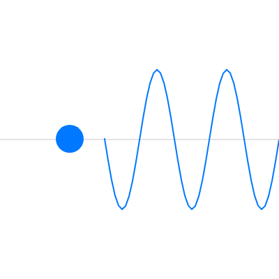

7. アニメーション
スケッチの基本構造 で説明したように、draw() は繰り返し呼ばれます。この章では、draw() が呼ばれるたびに図形の位置を少しずつ変えて、アニメーションを作る方法を説明します。
7.1. 位置と速度
物体を動かす基本は、「位置」と「速度」を変数で持ち、フレームごとに位置へ速度を加えることです。フレーム番号を \(t\) とすると、x 方向の位置 \(x\) と速度 \(v_x\) の関係は次のようになります。
速度 \(v_x\) は「1 フレームあたりの移動量」を表します。y 方向も同様です。
壁での跳ね返りは、ボールが壁を越えたときに速度の符号を反転するだけで表現できます。
半径 \(r\) のボールは、中心の x 座標が \(r\) より小さくなるか、\(\mathrm{width} - r\) より大きくなったときに、左右の壁に当たったと判定できます。
1// 壁で跳ね返るボール
2
3const DIAMETER = 40; // ボールの直径
4let x = 200; // ボールの位置
5let y = 100;
6let vx = 3; // ボールの速度（1 フレームあたりの移動量）
7let vy = 2;
8
9function setup() {
10 createCanvas(400, 400);
11}
12
13function draw() {
14 background(30);
15
16 // 位置に速度を加えて動かす
17 x += vx;
18 y += vy;
19
20 const r = DIAMETER / 2;
21 // 左右の壁に当たったら、x 方向の速度の符号を反転する
22 if (x < r || x > width - r) {
23 vx = -vx;
24 }
25 // 上下の壁に当たったら、y 方向の速度の符号を反転する
26 if (y < r || y > height - r) {
27 vy = -vy;
28 }
29
30 noStroke();
31 fill(255, 200, 0);
32 circle(x, y, DIAMETER);
33}
ダウンロード：
index.html、sketch.js
位置と速度は、draw() が呼ばれるたびに前の値を引き継ぐ必要があります。そのため、3〜7 行目のように関数の外でグローバル変数として宣言します。draw() の中で宣言すると、呼ばれるたびに初期値に戻ってしまい、ボールは動きません。
7.2. フレームレートに依存しない動き
上のサンプルでは、速度を「1 フレームあたりの移動量」としました。この方法では、処理が重くてフレームレートが下がると、ボールの動きも遅くなります。frameRate() で目標のフレームレートを変えた場合も、動く速さが変わります。
環境によらず同じ速さで動かしたいときは、システム変数 の deltaTime を使います。deltaTime は前のフレームからの経過時間（ミリ秒）です。速度を「1 秒あたりの移動量」で表し、経過時間を掛けて移動量を求めます。
1let x = 0;
2const SPEED = 120; // 1 秒あたり 120 ピクセル
3
4function draw() {
5 background(30);
6 x += SPEED * (deltaTime / 1000); // ミリ秒を秒に変換して掛ける
7 circle(x, 200, 40);
8}
7.3. 三角関数による周期運動
振り子のように行ったり来たりする動きは、三角関数で表せます。経過時間を \(t\) 秒、振幅を \(A\)、周期を \(T\) 秒、中心の位置を \(c\) とすると、位置 \(y\) は次の式で表せます。
\(\sin\) の値は \(-1\) から \(1\) の範囲で変化するため、\(y\) は \(c - A\) から \(c + A\) の範囲を往復します。
この式の \(t\) から位置に応じた値を引くと、場所ごとにタイミングがずれて、波のような形になります。
1// 三角関数で周期的な動きを作るスケッチ
2
3const AMPLITUDE = 100; // 振幅（ピクセル）
4const PERIOD = 2; // 周期（秒）
5
6function setup() {
7 createCanvas(400, 400);
8}
9
10function draw() {
11 background(255);
12 const t = millis() / 1000; // スケッチ開始からの経過時間（秒）
13 const centerY = height / 2;
14
15 // 中心線
16 stroke(200);
17 strokeWeight(1);
18 line(0, centerY, width, centerY);
19
20 // y = 中心 + 振幅 × sin(2π × t / 周期) で上下に振動する円
21 const y = centerY + AMPLITUDE * sin((TWO_PI * t) / PERIOD);
22 noStroke();
23 fill(0, 120, 255);
24 circle(100, y, 40);
25
26 // 位置によって位相をずらしながら同じ式で点を並べると、波になる
27 noFill();
28 stroke(0, 120, 255);
29 strokeWeight(2);
30 beginShape();
31 for (let px = 150; px <= width; px += 5) {
32 const shift = (px - 150) / 100; // 位相のずれ（周期の何倍か）
33 vertex(px, centerY + AMPLITUDE * sin(TWO_PI * (t / PERIOD - shift)));
34 }
35 endShape();
36}
ダウンロード：
index.html、sketch.js


図 7.1 サンプルの実行結果
12 行目の millis() は、スケッチを開始してからの経過時間をミリ秒で返す関数です。p5.js の sin() は、既定ではラジアンで角度を受け取ります。
31〜34 行目では、x 座標が 100 ピクセル増えるごとに位相を 1 周期分ずらしています。そのため、画面には波長 100 ピクセルの波が表示され、時間とともに右へ進みます。